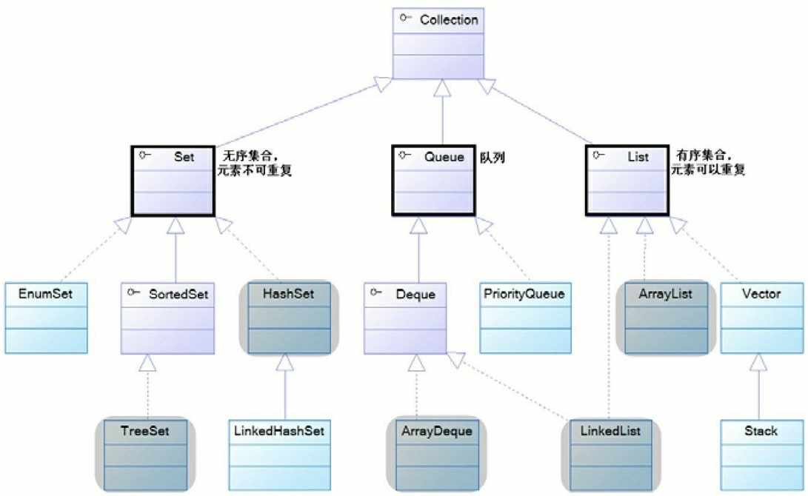
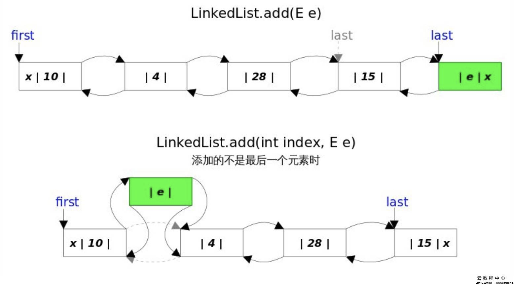

目录
在Java中，集合框架的使用频率非常高。在平时开发中，集合常常被用来装盛其他数据，或者用来实现常见的数据结构比如数组、队列和栈等。Java中集合主要可以分为Collection和Map两个大类。Collection又分为List、Queue和Set（见下图）。本篇博客主要来介绍下List集合。
图片. Java集合体系

关于List集合，主要掌握ArrayList和LinkedList。同时需要注意是这两个类都不是线程安全的。
ArrayList是开发过程中使用的最多的List接口的实现类。这个类底层用数组实现，可以动态调整数组大小。ArrayList集合中可以盛放任意类型的元素，包括null。这个类还提供了操作数组大小的方法用于store列表。ArrayList和Vector类似，最大的区别就是ArrayList是非线程安全的而Vector是线程安全的。
创建ArrayList的常见方式有下面两种
//创建一个空的数组，当我们向这个ArrayList中添加第一个元素时，会创建一个默认容量为10的数组
List<String> strList = new ArrayList<String>();
//创建指定长度为16的数组
List<String> strList2 = new ArrayList<String>(16); 对于ArrayList的创建，需要提下capacity和size这两个概念。capacity是指ArrayList底层实现数组的长度，而size是指数组中已经存放的元素的个数。
另外ArrayList还有一个通过Collection创建的构造函数，通过这个构造函数产生的ArrayList中的元素的顺序是Collection通过迭代器返回的元素的顺序。
public ArrayList(Collection<? extends E> c) {
elementData = c.toArray();
if ((size = elementData.length) != 0) {
// c.toArray might (incorrectly) not return Object[] (see 6260652)
if (elementData.getClass() != Object[].class)
elementData = Arrays.copyOf(elementData, size, Object[].class);
} else {
// replace with empty array.
this.elementData = EMPTY_ELEMENTDATA;
}
}在使用创建ArrayList的时候，最好能对ArrayList的大小做一个判断，这样有一下几个好处:
向ArrayList中添加元素常用的两个方法是：
public boolean add(E e) {
ensureCapacity(size + 1);//确保对象数组elementData有足够的容量，可以将新加入的元素e加进去
elementData[size++] = e;//加入新元素e，size加1
return true;
}
//扩容的逻辑
private void grow(int minCapacity) {
// overflow-conscious code
int oldCapacity = elementData.length;
int newCapacity = oldCapacity + (oldCapacity >> 1);
if (newCapacity - minCapacity < 0)
newCapacity = minCapacity;
if (newCapacity - MAX_ARRAY_SIZE > 0)
newCapacity = hugeCapacity(minCapacity);
// minCapacity is usually close to size, so this is a win:
elementData = Arrays.copyOf(elementData, newCapacity);
}ArrayList的add（E e）的添加逻辑比较简单，就不把源码全部贴出来了，大家可以自己去看下。大致的添加过程是:首先判断当前数组是不是空数组，如果还是空数组，就创建一个长度是10的默认长度的数组，再将元素添加进去；如果当前的ArrayList不是空数组，判断当前的数组是否已经满了，如果满了就进行扩容（扩容的逻辑是oldCapa+oldCapacity/2，如果这个长度还比所需要的最小长度小，就使用所需的最小长度，如果这个最小值大于了数组的最大长度，就是用Integer.MAX_VALUE作为数组长度），再将元素添加进去。在扩容过程中，ArrayList其实是重新创建了一个长度是newCapacity的数组，创建的代码如下：
//这段代码效率较高，我们开发过程中可以借鉴使用
elementData = Arrays.copyOf(elementData, newCapacity); //将集合c中的元素全部添加到ArrayList的尾部
public boolean addAll(Collection<? extends E> c) {
Object[] a = c.toArray();
int numNew = a.length;
ensureCapacityInternal(size + numNew); // Increments modCount
System.arraycopy(a, 0, elementData, size, numNew);
size += numNew;
return numNew != 0;
}
//在ArrayList的指定位置添加元素，同时将ArrayList中其他元素右移
//这个方法在使用时需要特别注意index的范围
public boolean addAll(int index, Collection<? extends E> c) {
rangeCheckForAdd(index);
Object[] a = c.toArray();
int numNew = a.length;
ensureCapacityInternal(size + numNew); // Increments modCount
int numMoved = size - index;
if (numMoved > 0)
System.arraycopy(elementData, index, elementData, index + numNew,
numMoved);
System.arraycopy(a, 0, elementData, index, numNew);
size += numNew;
return numNew != 0;
}//将下标位置的元素替换成新的元素，并且返回原来位置上的元素
public E set(int index, E element) {
rangeCheck(index);
E oldValue = elementData(index);
elementData[index] = element;
return oldValue;
}常用的删除方法有如下，这些方法的功能根据方法名很容易就看懂，这边就不贴源代码了。
查询方法用来查询ArrayList中是否包含某个元素，常用的查询方法有如下几个：
通过下面的代码可以看出，判断相等的标准是两个元素通过equals方法比较相等。
public boolean contains(Object o) {
return indexOf(o) >= 0;
}
public int indexOf(Object o) {
if (o == null) {//返回第一个null的索引
for (int i = 0; i < size; i++)
if (elementData[i] == null)
return i;
} else {//返回第一个o的索引
for (int i = 0; i < size; i++)
if (o.equals(elementData[i]))
return i;
}
return -1;//若不包含，返回-1
}
public int lastIndexOf(Object o) {
if (o == null) {
for (int i = size - 1; i >= 0; i--)
if (elementData[i] == null)
return i;
} else {
for (int i = size - 1; i >= 0; i--)
if (o.equals(elementData[i]))
return i;
}
return -1;
}Vector和ArrayList非常相似，底层都是通过数组来实现集合的。Vector和ArrayList最大的区别是Vector的很多方法都是用synchronize修饰的，所以是线程安全的。下面列举下两者的主要区别：
LinkedList的内部维护的是一个双向链表，定义了如下节点（JDK1.8中的代码，其他版本的会有不同），同时还定义了头尾指针：
...
transient int size = 0;
transient Node<E> first;
transient Node<E> last;
...
private static class Node<E> {
E item;
Node<E> next;
Node<E> prev;
Node(Node<E> prev, E element, Node<E> next) {
this.item = element;
this.next = next;
this.prev = prev;
}
} //构造一个空的List
public LinkedList() {
}
//通过Collection集合构造LinkedList
public LinkedList(Collection<? extends E> c) {
this();
addAll(c);
}由于LinkedList底层是有链表实现的，所以LinkedList提供了很多链表的常见操作：
public void add(int index, E element) {
//检查下标合法性
checkPositionIndex(index);
if (index == size)
//在尾部插入
linkLast(element);
else
//在指定位置插入
linkBefore(element, node(index));
}由于底层使用链表，所以LinkedList不会有扩容机制。每次add过后，LinkedList的结构如下：

public E remove(int index) {
checkElementIndex(index);
return unlink(node(index));
}
//判断相等的标准也是两个对象通过equals方法比较相等
public boolean remove(Object o) {
if (o == null) {
for (Node<E> x = first; x != null; x = x.next) {
if (x.item == null) {
unlink(x);
return true;
}
}
} else {
for (Node<E> x = first; x != null; x = x.next) {
if (o.equals(x.item)) {
unlink(x);
return true;
}
}
}
return false;
}
//清空链表
public void clear() {
// Clearing all of the links between nodes is "unnecessary", but:
// - helps a generational GC if the discarded nodes inhabit
// more than one generation
// - is sure to free memory even if there is a reachable Iterator
for (Node<E> x = first; x != null; ) {
Node<E> next = x.next;
x.item = null;
x.next = null;
x.prev = null;
x = next;
}
first = last = null;
size = 0;
modCount++;
}查询方法用来查询LinkedList中是否包含某个元素，常用的查询方法有如下几个（和ArrayList中的一致）：
public boolean contains(Object o) {
return indexOf(o) != -1;
}
//判断的标准也是equals方法
public int indexOf(Object o) {
int index = 0;
if (o == null) {
for (Node<E> x = first; x != null; x = x.next) {
if (x.item == null)
return index;
index++;
}
} else {
for (Node<E> x = first; x != null; x = x.next) {
if (o.equals(x.item))
return index;
index++;
}
}
return -1;
}由于LinkedList还实现了Deque这个接口，所以这个类还包含了许多其他方法。这些方法在介绍Queue时在整理。
上面提到的ArrayList和LinkedList都是非线程安全的，如果想要得到线程安全的类，可以通过线面的操作进行包装。
List list = Collections.synchronizedList(new ArrayList(...));以上代码返回的是一个SynchronizedList。这个类和Vector一样，也是线程安全的。Vector是java.util包中的一个类，而SynchronizedList是java.util.Collections中的一个静态内部类。这两个类都是List的子类，而且都是线程安全的。这两个类有如下的区别：
这边需要注意的是虽然上述两个类是线程安全的，但是如果我们在迭代时进行增减元素操作，仍然会有fast-fail异常。也就是说线程安全和快速失败机制是无关的，快速失败机制的目的是为了防止在迭代元素的过程中有其他线程改变了当前集合的元素。线程安全是为了解决数据脏读等问题。
为了将数组转换为ArrayList，开发者经常会这样做：
List<String> list = Arrays.asList(arr);使用Arrays.asList()方法可以得到一个ArrayList，但是得到这个ArrayList其实是定义在Arrays类中的一个私有的静态内部类。这个类虽然和java.util.ArrayList同名，但是并不是同一个类。java.util.Arrays.ArrayList类中实现了set(), get(), contains()等方法，但是并没有定义向其中增加元素的方法。也就是说通过Arrays.asList()得到的ArrayList的大小是固定的。
如果在开发过程中，想得到一个真正的ArrayList对象（java.util.ArrayList的实例），可以通过以下方式：
ArrayList<String> arrayList = new ArrayList<String>(Arrays.asList(arr));java.util.ArrayList中包含一个可以接受集合类型参数的构造函数。因为java.util.Arrays.ArrayList这个内部类继承了AbstractList类，所以，该类也是Collection的子类。
学东西的最终目的是为了能够理解、使用它。下面先概括的说明一下各个List的使用场景。如果涉及到可变长度的“数组”，应该首先考虑用List，具体的选择哪个List，根据下面的标准来取舍。
(01) 对于需要快速插入，删除元素，应该使用LinkedList。
(02) 对于需要快速随机访问元素，应该使用ArrayList。
(03) 对于“单线程环境” 或者 “多线程环境，但List仅仅只会被单个线程操作”，此时应该使用非同步的类(如ArrayList)。对于“多线程环境，且List可能同时被多个线程操作”，此时，应该使用同步的类(如Vector)，或者通过Collections工具类将ArrayList和LinkedList包装成线程安全的类再使用。